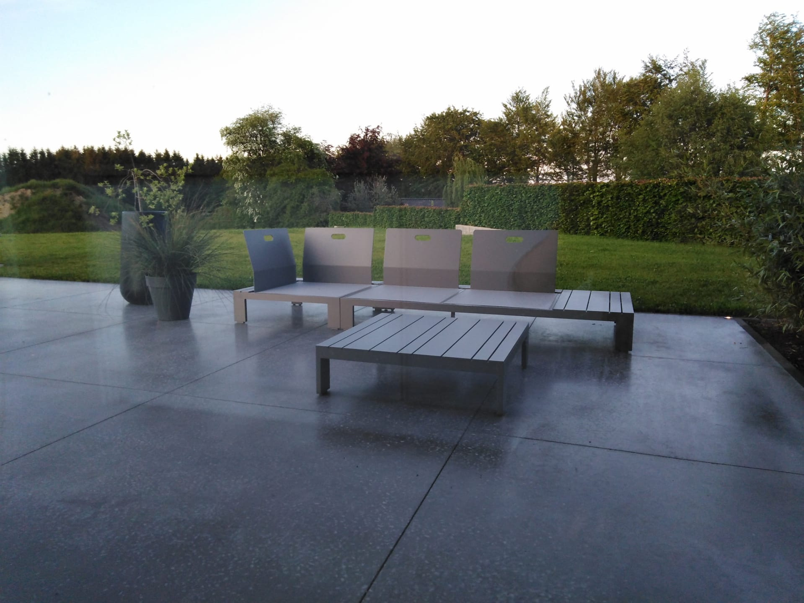
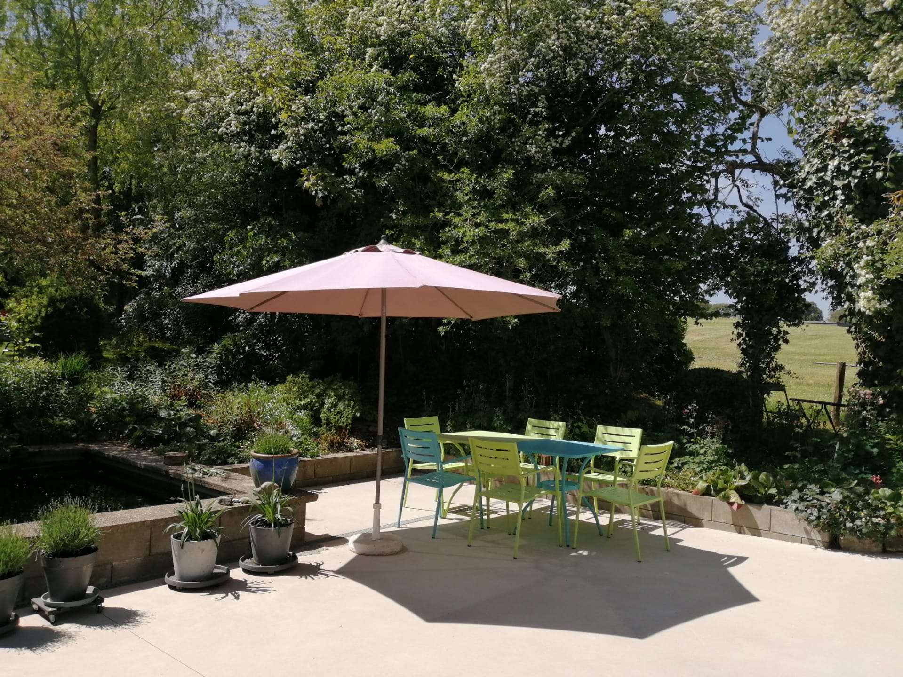
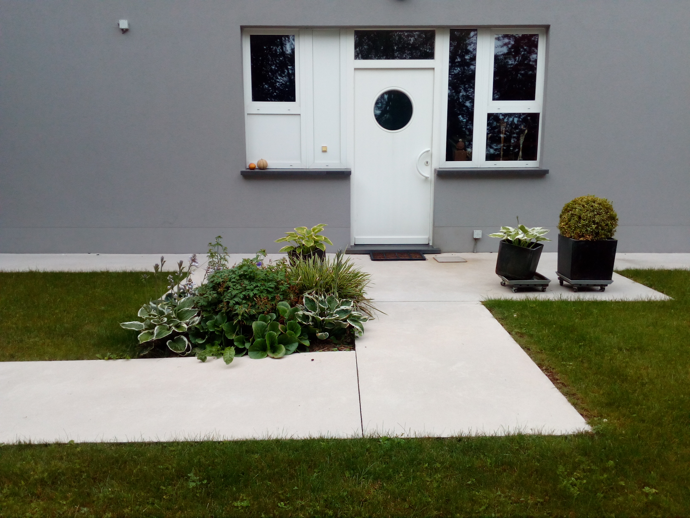
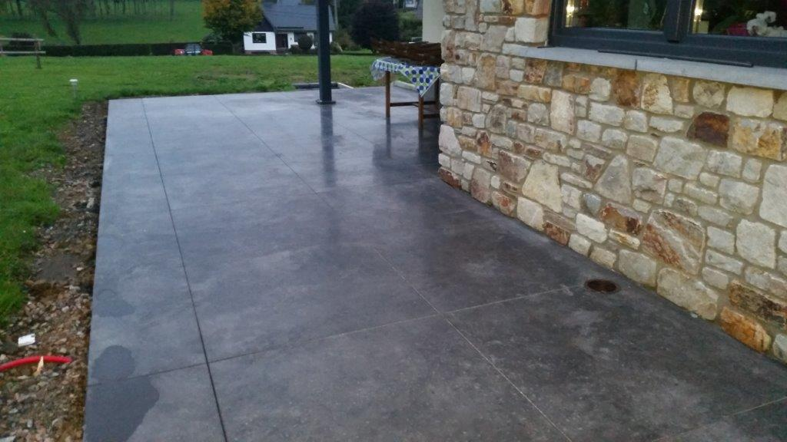
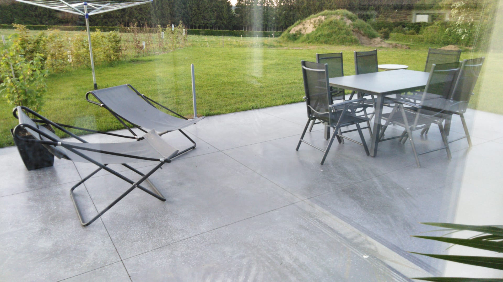
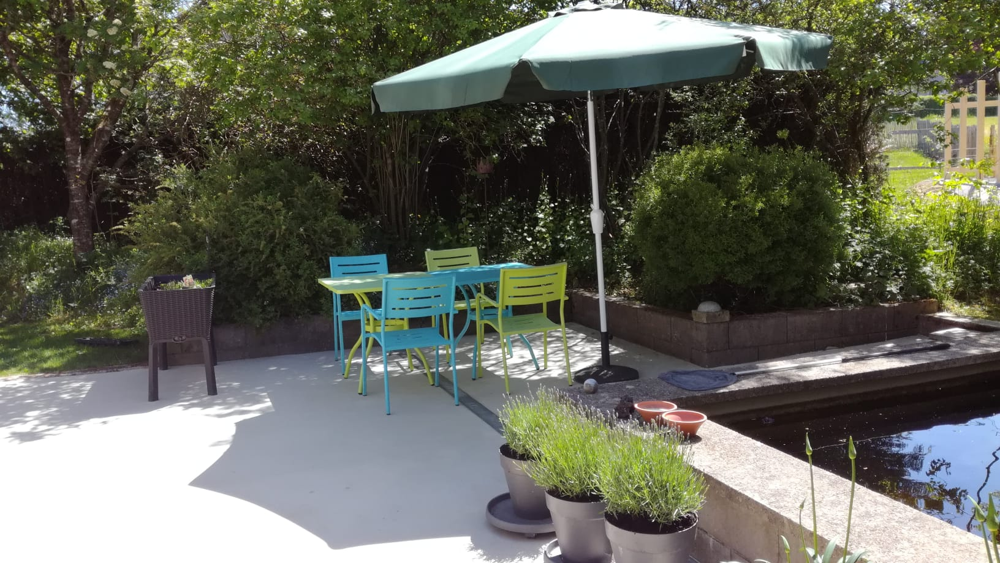

Béton lissé
Notre signature. Surface continue, lisse et homogène, finie à la talocheuse mécanique. Pour terrasses, sols intérieurs et grandes surfaces.
DécouvrirSols intérieurs, terrasses, allées, sols industriels. Lissé, brossé, semi-poli ou lavé : chaque surface est coulée et finie avec un outillage professionnel pour un résultat précis et durable.

Quatre techniques de finition principales — du plus lisse au plus texturé — pour s'adapter à chaque usage. Plus une option durcisseur lithium qui prolonge la vie de la dalle.

Notre signature. Surface continue, lisse et homogène, finie à la talocheuse mécanique. Pour terrasses, sols intérieurs et grandes surfaces.
Découvrir
Légère texture obtenue à la brosse motorisée. Excellente adhérence — idéal pour pentes, allées de garage et abords de piscine.
Découvrir
Le compromis entre lissé et brossé. Rendu sobre, mat à légèrement satiné, qui ne glisse pas. Parfait pour cours et grandes surfaces.
Découvrir
Granulats apparents, texture marquée. Très décoratif et antidérapant — sublime les abords de piscine et chemins de jardin.
Découvrir
Pour entrepôts, ateliers et locaux pros — surfaces résistantes coulées et finies à la machine.
Découvrir
Un durcisseur pénétrant qui renforce le béton, élimine la poussière et prolonge la durée de vie. Compatible avec toutes nos finitions.
Découvrir

Depuis plus de 15 ans, Prodal accompagne particuliers, architectes et entreprises au Luxembourg dans la réalisation de surfaces en béton décoratif. Lissé, brossé, semi-poli, lavé : nous maîtrisons toutes les finitions, avec un outillage professionnel pour un résultat homogène et durable.
Nous venons sur place comprendre le projet, le support et vos envies.
Vous recevez un devis détaillé et choisissez teintes et finitions.
Une étape essentielle : ragréage, primaire, propreté absolue.
Coulage mécanisé, finition à la talocheuse ou à la brosse selon le type choisi.
Chaque projet est unique. Chaque surface est signée Prodal.


